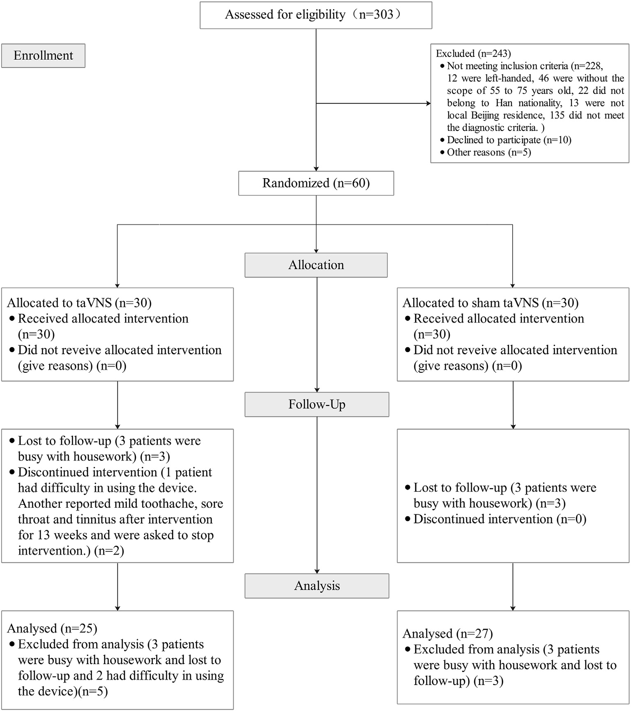
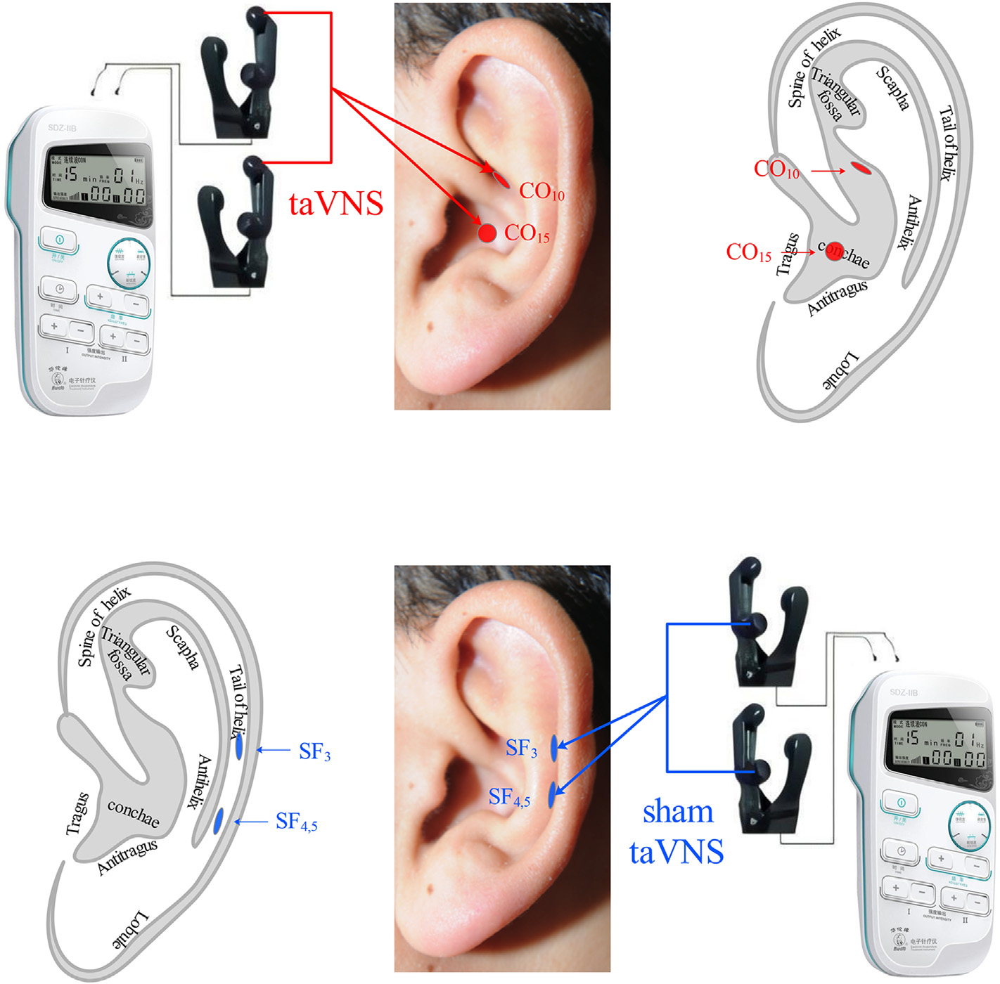
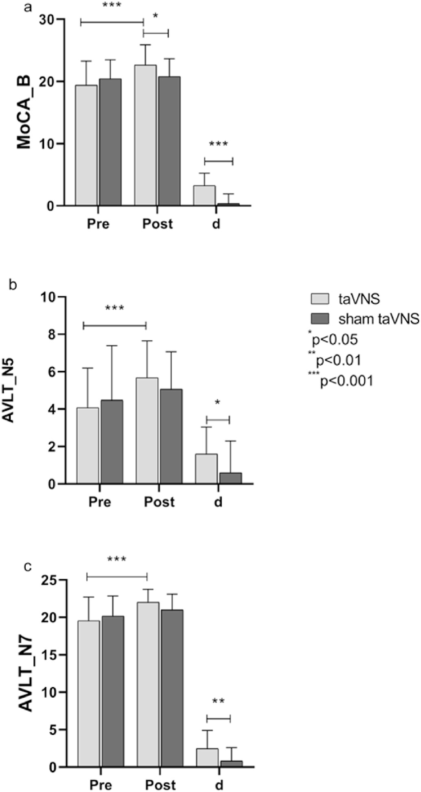

Wang et al., Brain Stimulation, 2022
זהו הניסוי הקליני הראשון בעולם מסוג RCT כפול-סמיות שבחן את היעילות של גירוי לא-פולשני של עצב הוואגוס דרך האוזן (taVNS) בחולים עם ליקוי קוגניטיבי קל (MCI). הניסוי נערך בשלושה מרכזים רפואיים בבייג'ינג וכלל 60 מטופלים שחולקו באופן אקראי לקבוצת taVNS או קבוצת ביקורת (sham).
בכל שנה מתווספים 9.9 מיליון מקרים חדשים של דמנציה בעולם. ליקוי קוגניטיבי קל (MCI) הוא השלב שלפני הדמנציה — מצב בו התפקוד הקוגניטיבי נפגע אך התפקוד היומיומי נשמר. הבעיה: 60%–100% מחולי MCI יפתחו דמנציה תוך 5–10 שנים.
טיפולים תרופתיים — כולל מעכבי כולינאסטראז, תרופות אנטי-אמילואיד, ותרופות אנטי-טאו — נכשלו בעיקרם. לכן, קיים צורך דחוף בגישה טיפולית חלופית.
גירוי עצב הוואגוס (VNS) הוכח בעבר כמשפר תפקוד קוגניטיבי — אך רק בשיטות פולשניות שדורשות ניתוח. המחקר הזה בדק האם גירוי לא-פולשני דרך העור של האוזן יכול להשיג תוצאות דומות.
303 מועמדים נבדקו. 60 עמדו בקריטריונים ושובצו באקראי:
קריטריוני הכללה: גילאי 55–75, אבחנת MCI לפי קריטריוני Jak/Bondi, ימניים, תושבי בייג'ינג.
קריטריוני הדרה: מחלות נוירולוגיות, מחלות מטבוליות, מחלות נפש חמורות, היסטוריה של הרדמה כללית, דמנציה.

שתי הקבוצות קיבלו מכשיר זהה במראהו — אלקטרודות קליפ לאוזן המחוברות לגירוי חשמלי. ההבדל היחיד: מיקום הגירוי.
| פרמטר | קבוצת taVNS (אמיתי) | קבוצת Sham (ביקורת) |
|---|---|---|
| מיקום גירוי | Cymba concha — CO15 + CO10 (אזור עצב הוואגוס) | Scapha — SF3 + SF4,5 (אזור ללא עצב וואגוס) |
| תדרים | 20Hz ל-10 שניות + 100Hz ל-50 שניות (מחזורי) | |
| עוצמה | 0.6–1.0 mA (לפי סבילות) | |
| משך טיפול | 30 דקות, פעמיים ביום | |
| תדירות | 5 ימים בשבוע | |
| משך כולל | 24 שבועות (6 חודשים) | |

סמיות כפולה: גם המטפל וגם המטופל לא ידעו איזה קליפ פעיל. שני הקליפים נראו זהים; רק אחד מתוך שני קצוות האלקטרודה היה מחובר בפועל. הפתיחה של הקודים נעשתה רק בסוף הניסוי.
ביצוע עצמי בבית: המטופלים הופעלו על השימוש והמשיכו בטיפול עצמי בבית, עם מעקב שבועי דרך וידאו ב-WeChat.
לפני ההתערבות — אין הבדל בין הקבוצות (p = 0.285).
אחרי 24 שבועות — הבדל מובהק בין הקבוצות (p = 0.033).
קבוצת taVNS: שיפור ממוצע של +3.24 נקודות (p < 0.001).
קבוצת Sham: שיפור של 0.33 נקודות בלבד (p = 0.338, לא מובהק).
| מדד | taVNS — שינוי | Sham — שינוי | הבדל בין קבוצות |
|---|---|---|---|
| N5 (זיכרון מיידי) | +1.60 | +0.59 | p = 0.047 * |
| N7 (זיכרון מושהה) | +2.48 | +0.82 | p = 0.005 ** |
| מדד | תחום | שיפור ב-taVNS? | הערה |
|---|---|---|---|
| STTA | תפקוד ביצועי | לא | אין הבדל מובהק |
| STTB | תפקוד ביצועי (מורכב) | כן | שיפור גם ב-sham; ייתכן אפקט תרגול |
| BNT | שפה (שיום) | כן (p < 0.001) | שיפור גם ב-sham |
| PSQI | איכות שינה | כן (p = 0.002) | שיפור גם ב-sham |
| RBDSQ | הפרעת שינה REM | כן (p = 0.025) | שיפור גם ב-sham |
| ESS | נמנום יום | כן (p < 0.001) | שיפור גם ב-sham |
| FAQ | תפקוד יומיומי | כן (p = 0.006) | שיפור גם ב-sham |

הניסוי דיווח על פרופיל בטיחות מצוין:
מבחן MoCA הוא מבחן סטנדרטי שרופאים משתמשים בו לאבחון ירידה קוגניטיבית. הציון המקסימלי הוא 30, וציון מתחת ל-26 מצביע בדרך כלל על ליקוי קוגניטיבי.
שיפור של 3.24 נקודות הוא הבדל משמעותי מאוד מבחינה קלינית — הוא יכול להיות ההבדל בין אדם שמתקשה לזכור רשימת קניות, שוכח שמות של מכרים, או מתבלבל בניווט — לבין אדם שמתפקד באופן עצמאי לחלוטין.
במילים אחרות: אנשים שקיבלו את הטיפול חזרו לתפקוד קוגניטיבי קרוב לנורמלי, בעוד שקבוצת הביקורת כמעט ולא השתפרה.
הניסוי הקליני הוכיח ש-taVNS יכול לשפר ביצועים קוגניטיביים בחולי MCI. שיטה זולה, יעילה וחדשנית זו יכולה להיות מומלצת כטיפול לחולי MCI למניעה או האטה של ההתפתחות לדמנציה — אם כי נדרש מחקר נוסף.
| שדה | פרט |
|---|---|
| כותרת מקורית | The efficacy and safety of transcutaneous auricular vagus nerve stimulation in patients with mild cognitive impairment: A double blinded randomized clinical trial |
| חוקרים | Lei Wang, Jinling Zhang, Chunlei Guo, Jiakai He, Shuai Zhang, Yu Wang et al. |
| מוסד | Institute of Acupuncture and Moxibustion, China Academy of Chinese Medical Sciences, Beijing |
| כתב עת | Brain Stimulation, Vol 15, 2022, pp 1405–1414 |
| DOI | 10.1016/j.brs.2022.09.003 |
| PubMed | 36150665 |
| רישיון | CC BY-NC-ND 4.0 (גישה חופשית) |